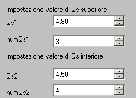
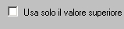
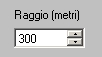
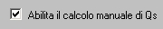

IMPOSTAZIONI QUADRO 1
1 Scelta dei valori di soglia superiore ed inferiore di Qs
Qs1,Qs2 indicano i valori di soglia mentre numQs1 e numQs2 indicano il numero di specie corripondenti al valore di soglia
Se si desidera un solo valore di soglia selezionare la casella corrisponente

2 Scelta del raggioScegliere il raggio dell'area circolare al cui centro e' presente la localita' d'intervento

3 Calcolo di Qs
Selezionare la casella se si vuole abilitare il calcolo manuale di Qs
